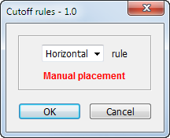

Cutoff rules
Requirements:
This script needs to automatically place a cutoff rule in a location that is dependent on what object(s) the user has selected.
If there are no object(s) selected, to simply have the rule loaded in the tool tip and ready to be placed manually by the user.
There three rules for the user to choose from in a pop-up: 'Horizontal', 'Vertical' and 'Dotted'.
Automatic placement
• Horizontal rule (object style = 'Cutoff rule horizontal')
Places a rule one *baseline below the select object(s).
The width is equal to the width of the selected object(s).
• If in '01.indd' then rule is placed 2 baselines below. If in '05.indd' then rule is placed 3 baselines below.
• Vertical rule (object style = 'Cutoff rule vertical)
Places a rule between two or more selected objects.
The height runs from the top y value to the lowest y value of the selected object(s).
• Dotted rule (object style = 'Cutoff rule dotted)
Looks if there is a dotted paragraph rule already in the selected object(s).
If there is, then it adds a rule below.
If there isn't, it adds a rule above and below.
See the attached images to view how it should be placed above and below.
Manual placement
Loads the rule in the tool tip.
General setup for automatic placement
If the selected object(s) is text, then the script fits the frames to content running the rule placement.
Full undo.
* Is it possible to snap to the nearest baseline? If not, one baseline below = 10.34pt.
** If the first paragraph style has a paragraph rule, then do not add a the 'Dotted rule' stroke on top. AND do not add inset spacing to the Top.
How it works:
If nothing is selected, the script works in "manual" mode: it simply loads the rule in the tool tip.

If some objects other than text frames are selected, they are deselected by the script.
If ruler measurement units are not inches, they are set to inches.
Three snippets -- Cutoff rule horizontal.idms, Cutoff rule horizontal.idms and Cutoff rule dotted.idms -- should be located in the Objets de L'Express folder
For dotted rules -- if two frames are selected and one (or both) of them have the first paragraph whose style has “rule above — dotted” on, the top inset and top rule are not added.
Download the script from here.
Go back to the main Scripts for L'Express de Toronto Inc. page